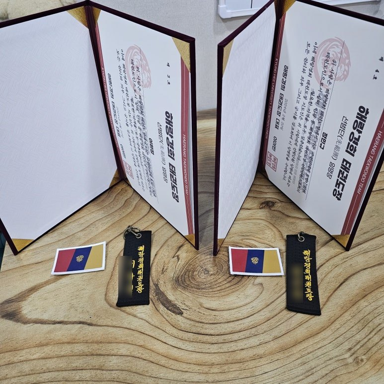
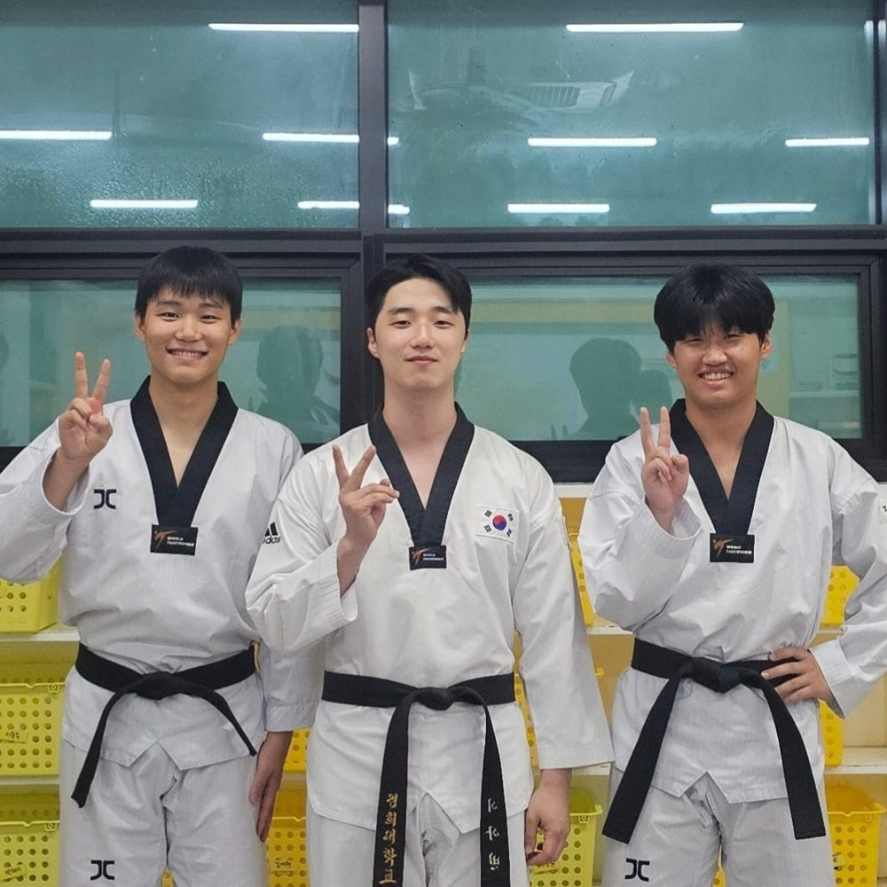

해랑경희 교육의 정수
선범단(先範團)
(feat. 동료 멘토 지도 시스템)


안녕하십니까 해랑경희 태권도장입니다 !
해랑경희 태권도장이 시작되고 드디어
‘선범단(先範團)’으로
임명되는 수련생들이 생겼습니다 !
해랑경희 태권도장에서 수련하는 수련생이라면 도복 왼팔에 붙일 패치를 받는 것을 목표로 태권도를 수련하는데, 선범단으로 임명된 수련생은 이 패치를 부착할 수 있게 됩니다.
멘토 같은 개념인 선범단원으로 임명되기 위해서는 수련생이 태권도인으로서 실력, 인성 그리고 평소 생활 태도가 다른 사람들에게 모범적으로 보인다고
지도진들에게 만장일치로
인정되어야만 합니다.
선범단원으로 임명된 수련생은 다른 사람을 가르치기에 충분한 자격이 있다고 인정받은 것이지요.
- 선범단원이 되려면
- 다른 사람이 행복할 수 있도록 도움으로써 오는 행복을 느낄 수 있어야 함
- 실기능력이 우수해야 함
- 동료들로부터 인성적으로 인정되어야 함
- 역지사지를 잘 할 수 있어야 함
선범단 문화를 어떤 생각에서
시작하게 되었느냐.
이 내용에 대해 작성해 보려 합니다. 시작하기에 앞서 제가 가진 세 가지의 경험 사례를 간략히 말씀드리자면
한참 학생으로서 배우기만 하다가 지도자로서 일을 시작하니 실기능력은 있으나 가르치는 기술 능력이 부족하여 노련해지기까지 시간이 어느 정도 걸림.
한국에서 영어를 배우고 해외에 나가 생활할 때 초반에는 외국인들과 대화도 잘 못하고 그들의 말을 이해하고 나의 말을 자연스럽게 전하기까지 시간이 어느 정도 걸림.
입대 전 대학 다닐 때는 그렇게 수업 내용이 귀에 안 들리다가 전역 후 휴학하여 1년 동안 지도자 생활을 하고 복학을 하니 대학 수업이 그렇게 재미있을 수가 없었다.
삶을 살면서 주입식 교육에 특화되어 선생님들이 가르쳐 주는 수업을 잘 암기하는 특별한 분들을 여럿 만났으나, 저는 울산 양정동 촌 동네 출신이다 보니 제가 필요로 하는 지식이 아니면 학교 수업에 ‘적당히’ 적응하는 그런 성향을 지닌 사람이었었습니다.
위의 3가지 경험을 거치면서
‘만약 내가 친동생에게라도
내가 가진 지식을 다른 사람에게 설명하면서
내 지식을 확실히 하는 작업을 자주 했다면
나는 어떤 모습으로 성장했을까?’
라는 생각을 하였고, 스포츠 교육학을 공부하면서
‘나는 너를,
너는 나를 가르친다’
라는 슬로건의 ‘동료 교수 모형’이라는 것을 알게 되었습니다. 지도 현장에서 ‘동료 교수 모형’을 활용해 보았을 때 단순히 학생이 묻고 학생이 가르친다를 넘어서서 그들 간에 강한 유대감이 형성되는 모습을 볼 수 있었습니다.

그래서 수련생들에게 공식적으로 다른 사람을 가르칠 수 있는 자격과 기회를 주어
다른 수련생들이 ‘선범단원이라면 사범님들이 인정한 수련생이니까 믿고 배워도 된다.’라는 생각을 하게 유도하고,
선범단원인 수련생도 ‘나는 내가 가진 지식을 다른 사람에게 설명하기 위해 이렇게 저렇게 준비해 봐야지’라는 생각을 하도록 유도해 보려는 것입니다.
교육학에서는 이렇게 설명합니다.
- 선생이 묻고 선생이 대답하면최악의 교육
- 선생이 묻고 학생이 대답하면보통의 교육
- 학생이 묻고 선생이 대답하면보통의 교육
- 학생이 묻고 학생이 대답하면최고의 교육
최고의 교육이라고 불리는 ‘학생이 묻고 학생이 대답한다’라는 말을 가볍게 보면 ‘정확한 지식을 가지고 있지 않은 학생이 대답하기 때문에 뭐가 최고의 교육이냐’라는 반문이 나올 수 있지만, 대답하는 학생이 정확한 지식을 가진 선생으로부터 잘 교육받은 상태인 상황에 비슷한 여건의 사람들끼리 문제를 해결하기 위해 brainstorming 하고, 몰입하고, 궁리하여 해답을 도출해 내는 모습이 가장 창조적이고 건설적인 결과를 도출해낸다는 이론이었습니다.
다른 사람을 가르쳐보는 연습을 하는 경험을 쌓음으로써 나중에 태권도 지도자가 아닌 다른 직업을 갖게 되더라도 그 분야에서 동료들과 함께 뚜렷한 성과를 내는 것과 자신이 가진 지식으로 다른 사람에게 도움이 되는 경험을 미리 해보는 시간을 제공하고자 합니다.
이 모든 말들을 담은 문화가 저희 태권도장에서 진행하고자 하는 선범단 문화입니다.
선범단원으로 임명되고 활동하는 것은 저희 도장에서 가장 높은 교육 가치를 가지고 있기에 자신의 이름이 새겨진 키링과 임명장 그리고 패치를 선물받게 됩니다.
선범단원이 되면
무엇이 좋나요?
- 지도진으로부터 다른 사람을 가르칠 수 있는 공식적인 권한을 받음
- 다른 사람을 가르치기 위해서는 자기 자신이 알고 있는 지식이 정확한 지식인지 점검하게 됨
- 사람의 다양성을 고려하여 하나의 지식을 다양하게 설명하기 위해 깊이 있는 몰입을 연습하게 됨
- 또래 간 지식 공유를 통해 강한 유대감 형성
선범단원이 되어 다른 사람을 가르치기 위해서는
- 자신의 가지고 있는 지식이 정확한지 그렇지 않은지 판단할 수 있어야 함
- 좋은 교육이란 말하는 사람이 잘 말하는 것이 아닌 듣는 사람이 잘 이해할 수 있는 것이라는 점을 알아야 함
- 사람은 개개인마다 다양한 특색이 있기에 하나의 지식이더라도 다채로운 접근으로 다채롭게 설명할 수 있어야 함
이와 같은 특징들을 고려하여 고민하게 되는 시간을 갖게 될 것입니다.
나름 전례가 없고 실험적인 문화라는 지적을 들었습니다만
배우기만 하고 쓰지를 않으니 답답함을 여러 번 느꼈었던 사람으로서 자신의 지식을 일상생활에서 사용해 보는 경험을 해보는 시간을,
준비된 수련생이라면 자신이 가진 것으로 다른 사람에게 활약하는 시간을 제공하고, 준비되지 않은 수련생이라면 이 정도의 수준이 될 수 있게 교육하도록 하겠습니다.
그리고 이 문화를 통해 우리 수련생들이
어디에 내놔도 자랑스러운
사회인이 될 수 있도록
한 명 한 명 진심을 담아 교육하도록 하겠습니다.
감사합니다 :)